function:call append(0,"oeasy o2z o3z"):call execute(gg=G):ls一样执行:init，可能么？🤔ls 是一个 命令command:command 查看所有用户定义的命令:command TOhtml 查询指定的命令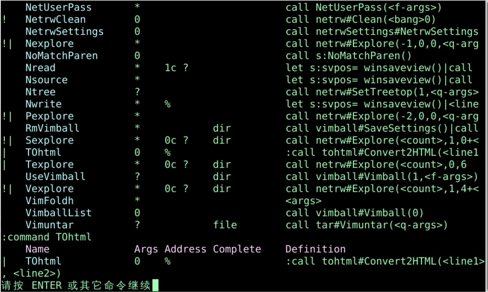
:command DeleteFirst :1delete:command 自定义命令commandDeleteFirst :1delete 删除第1行:DeleteFirst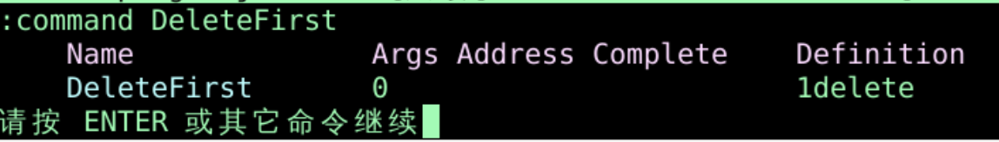
:command Delete5Lines :.,+5delete:Delete5Lines:command! Delete5Lines :.,+4delete:Delete5Lines:normal '<v'>normal 模式执行后续命令'< 跳到原选区开头v 进入字符可视化'> 跳到原选区结尾command RestoreSelection :normal '<v'><cr>:RestoreSelection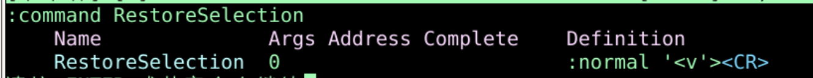
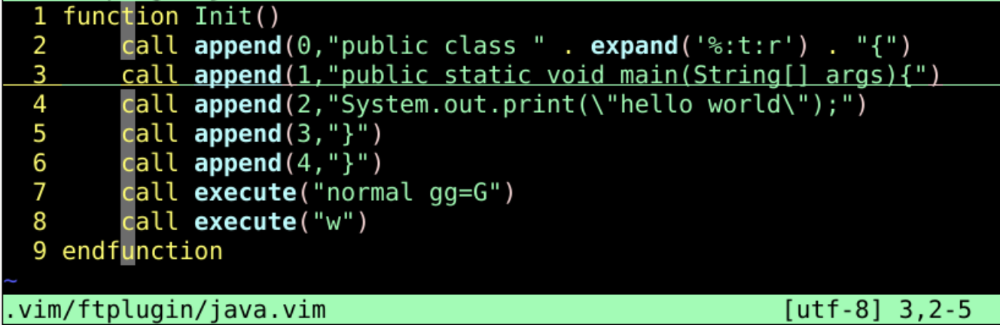
:call Init():command Init :call Init()
:call Init():Init
:command Init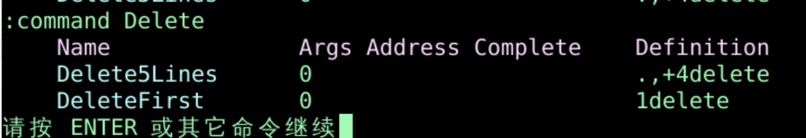
:h command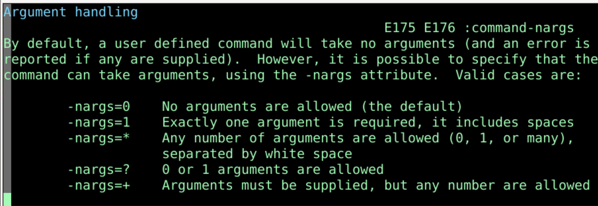
:command! -nargs=0 DeleteFirst :1delete:command! -nargs=0 Delete5Lines :.,+4delete:command -nargs=1 Say :echo "<args>"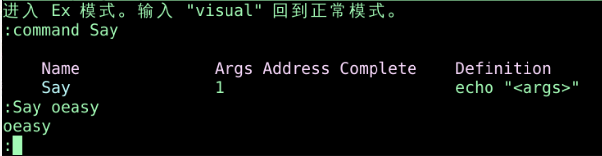
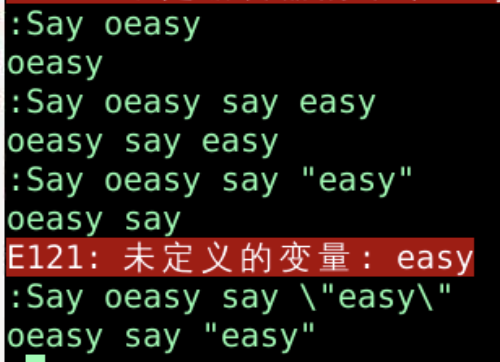
:Say oeasy say easy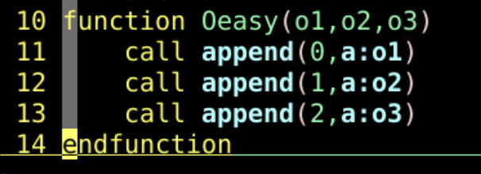
:call Oeasy("oeasy","o2z","o3z"):command -nargs=* Oeasy :call Oeasy(<args>):Oeasy "111","222","333":Oeasy 111,222,333重新定义命令
:command! -nargs=* Oeasy :call Oeasy(<q-args>)执行命令
:h command/range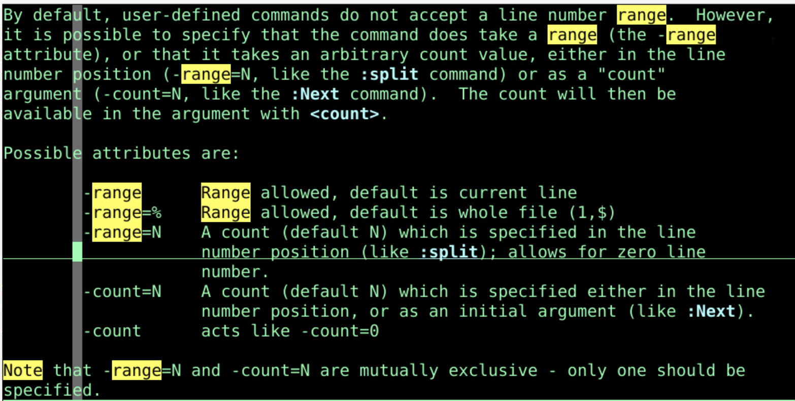
:command -range SaveIt :<line1>,<line2>write! save_file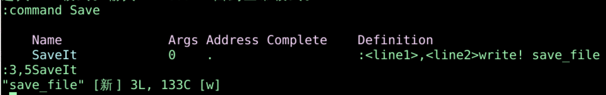
:command -range -nargs=1 SaveIt :<line1>,<line2>write! <args>function! Comment(line1, line2)
execute a:line1.','.a:line2.'s/^/#/'
endfunction
command! -range=% Comment call Comment(<line1>,<line2>)
:delcommand SaveIt:comclear